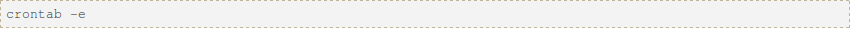

Blog
CRON JOBS in LINUX
What is cron ??
It is an acronym for "Command Run On Notice" or for "Commands Run Over Night"
The software utility Cron is a time-based job scheduler in Unix-like computer operating systems. People who set up and maintain software environments use cron to schedule jobs (commands or shell scripts) to run periodically at fixed times, dates, or intervals. It typically automates system maintenance or administration—though its general-purpose nature makes it useful for things like connecting to the Internet and downloading email at regular intervals.
"cron" is most suitable for scheduling repetitive tasks. Scheduling one-time tasks is often more easily accomplished using the associated at utility.
Crontab File...
Cron is driven by a crontab (cron table) file,A crontab is a simple text file with a list of commands meant to be run at specified times. It is edited with a command-line utility. These commands (and their run times) are then controlled by the cron daemon, which executes them in the system background. A configuration file that specifies shell commands to run periodically on a given schedule.
The crontab files are stored where the lists of jobs and other instructions to the cron daemon are kept. Users can have their own individual crontab files and often there is a system wide crontab file (usually in /etc or a subdirectory of /etc) that only system administrators can edit.
Each line of a crontab file represents a job, and is composed of a CRON expression, followed by a shell command to execute.Normally the job is executed when the time/date specification fields all match the current time and date.
Examples
Cron Expression
A CRON expression is a string comprising five or six fields separated by white space that represents a set of times, normally as a schedule to execute some routine.
Format

In some uses of the CRON format there is also a seconds field at the beginning of the pattern. In that case, the CRON expression is a string comprising 6 or 7 fields.
Comma ( , ) Commas are used to separate items of a list. For example, using "MON,WED,FRI" in the 5th field (day of week) means Mondays, Wednesdays and Fridays.
Hyphen ( - ) Hyphens define ranges. For example, 2000-2010 indicates every year between 2000 and 2010 AD, inclusive.
Percent ( % ) Percent-signs (%) in the command, unless escaped with backslash (\), are changed into newline characters, and all data after the first % are sent to the command as standard input.
Using Cron
To use cron for tasks meant to run only for your user profile, add entries to your own user's crontab file. Start the crontab editor from a terminal window:
Special Strings
Cron also offers some special strings:

DAEMONS in LINUX
A Daemon is a computer program that runs as a background process, rather than being under the direct control of an interactive user.
Daemons are usually instantiated as processes. A process is an executing (i.e., running) instance of a program. Processes are managed by the kernel (i.e., the core of the operating system), which assigns each a unique process identification number (PID).
There are three basic types of processes in Linux: interactive, batch and daemon. Interactive processes are run interactively by a user at the command line (i.e., all-text mode). Batch processes are submitted from a queue of processes and are not associated with the command line; they are well suited for performing recurring tasks when system usage is otherwise low.
Creation of Daemons
In a Unix environment, the parent process of a daemon is often, but not always, the init process. A daemon is usually either created by a process forking a child process and then immediately exiting, thus causing init to adopt the child process, or by the init process directly launching the daemon. In addition, a daemon launched by forking and exiting typically must perform other operations, such as dissociating the process from any controlling terminal (tty). Such procedures are often implemented in various convenience routines such as daemon(3) in Unix.
Systems often start daemons at boot time and serve the function of responding to network requests, hardware activity, or other programs by performing some task. Daemons can also configure hardware (like udevd on some Linux systems), run scheduled tasks (like cron), and perform a variety of other tasks.
Difference between Cronjobs and DAEMONS
In general, if your task needs to run more than a few times per hour (maybe less than 10 minutes) you probably want to run a daemon.
A daemon which is always running, has the following benefits:
1.It can run at frequencies greater than 1 per minute
2.It can remember state from its previous run more easily, which makes programming simpler (if you need to remember state) and can improve efficiency in some cases.
3.BUT if it quits (e.g. following an error), it won't automatically be restarted unless you implemented that feature
4.It uses memory even when not doing anything useful.
5.Memory leaks are more of a problem.
A cronjob is a proccess that is executed once in a while. An example of cronjob could be a script that remove the content of a temporary folder once in a while, or a program that sends push notifications every day at 9.00 am to a bunch of devices.
In general, robustness favours "cron", and performance favours a "daemon".